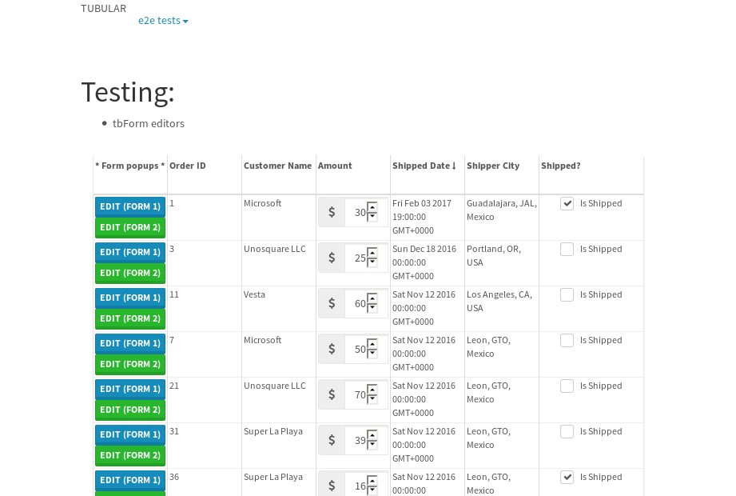
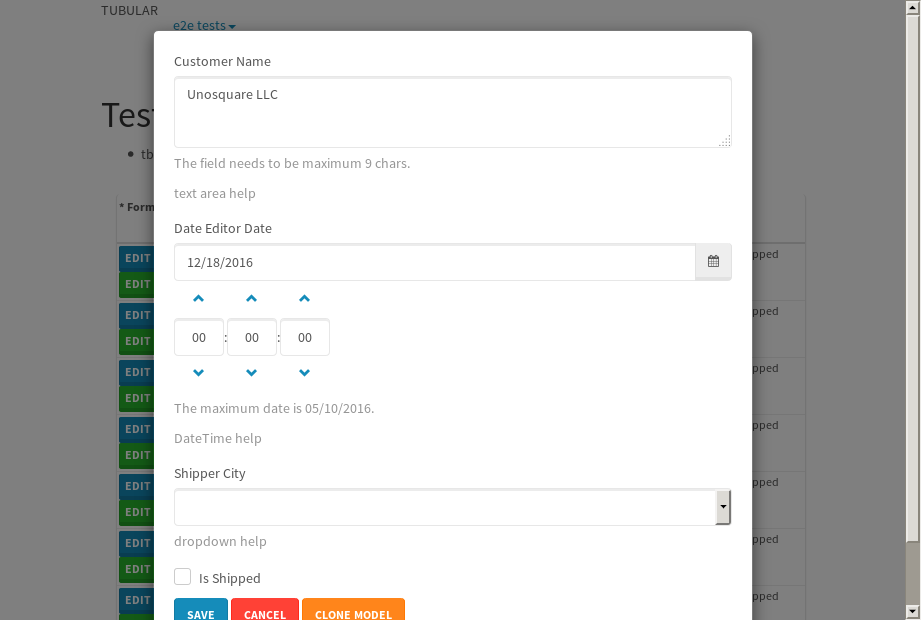
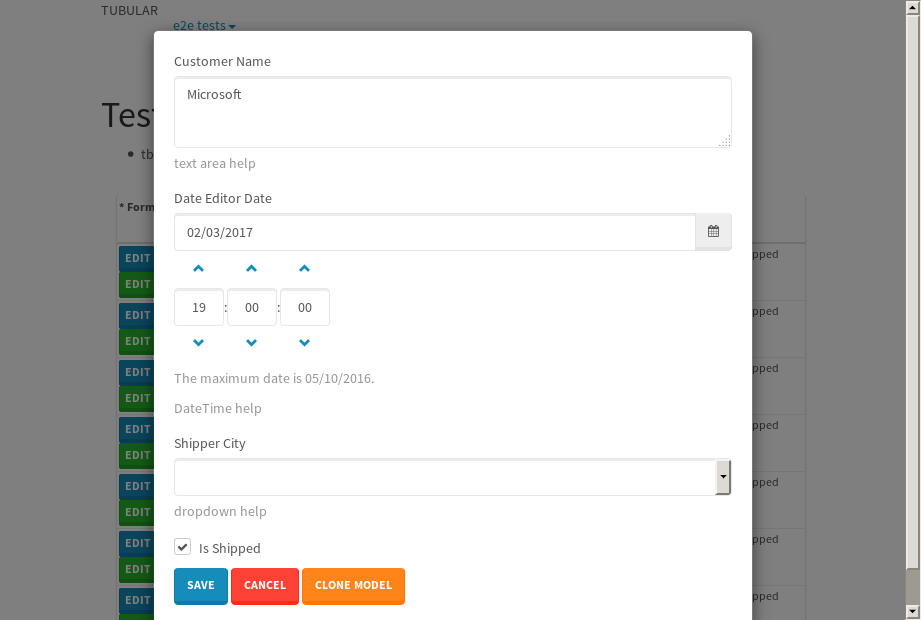
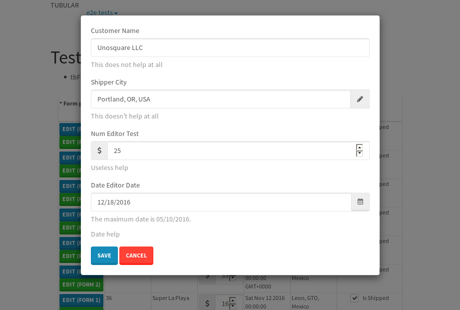
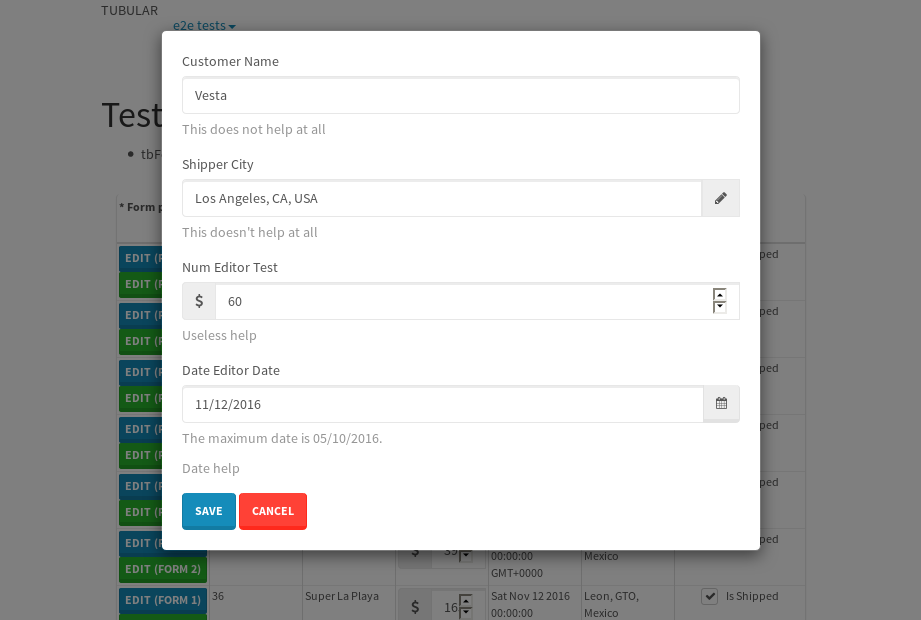
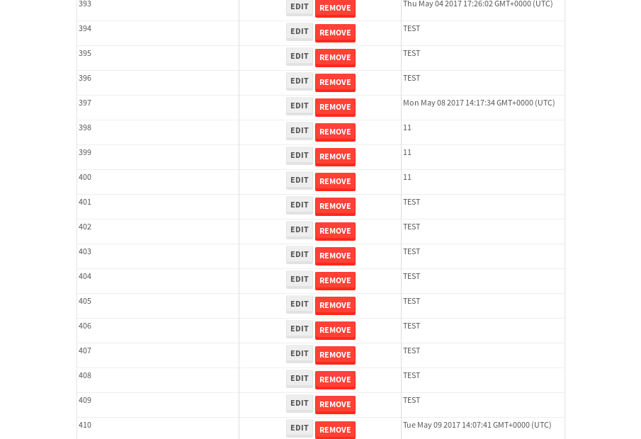

tbColumn.Grid Sorting - 28.791sTests: 5Skipped: 0Failures: 0 should sort data in ascending order then on descending order when sorting by Order Id column - 6.364sTests passed: 100.00%should order data in ascending order when click-sorting an unsorted text column - 6.41sTests passed: 100.00%should order data in descending order when click-sorting an ascending-sorted text column - 5.47sTests passed: 100.00%should order data in ascending order when click-sorting an unsorted date column - 5.251sTests passed: 100.00%should order data in descending order when click-sorting twice an unsorted date column - 5.294sTests passed: 100.00%
tbEmptyForm - 3.767sTests: 3Skipped: 0Failures: 0 should have an empty required field - 0.384sTests passed: 100.00%should not be able to click on save - 0.028sTests passed: 100.00%should load default value for numeric field - 0.034sTests passed: 100.00%
Tubular Filters.tbColumnFilter - 98.035sTests: 12Skipped: 0Failures: 0 should cancel filtering when clicking outside filter-popover - 7.666sTests passed: 100.00%should disable Value text-input for "None" filter - 5.707sTests passed: 100.00%should disable apply button for "None" filter - 5.858sTests passed: 100.00%should decorate popover button when showing data is being filtered for its column - 11.378sTests passed: 100.00%should correctly filter data for the "Equals" filtering option - 7.984sTests passed: 100.00%should correctly filter data for the "Not Equals" filtering option - 7.88sTests passed: 100.00%should correctly filter data for the "Contains" filtering option - 7.392sTests passed: 100.00%should correctly filter data for the "Not Contains" filtering option - 7.738sTests passed: 100.00%should correctly filter data for the "Starts With" filtering option - 6.392sTests passed: 100.00%should correctly filter data for the "Not Starts With" filtering option - 6.135sTests passed: 100.00%should correctly filter data for the "Ends With" filtering option - 6.084sTests passed: 100.00%should correctly filter data for the "Not Ends With" filtering option - 6.539sTests passed: 100.00%
Tubular Filters.tbColumnDateTimeFilter - 124.326sTests: 12Skipped: 0Failures: 0 should cancel filtering when clicking outside filter-popover - 6.24sTests passed: 100.00%should disable Value text-input for "None" filter - 5.59sTests passed: 100.00%should disable apply button for "None" filter - 5.793sTests passed: 100.00%should clear filtering when clicking on Clean button - 16.736sTests passed: 100.00%should decorate popover button when showing data is being filtered for its column - 11.165sTests passed: 100.00%should correctly filter data for the "Equals" filtering option - 6.476sTests passed: 100.00%should correctly filter data for the "Not Equals" filtering option - 6.613sTests passed: 100.00%should correctly filter data for the "Between" filtering option - 11.128sTests passed: 100.00%should correctly filter data for the "Greater-or-equal" filtering option - 10.947sTests passed: 100.00%should correctly filter data for the "Greater" filtering option - 10.853sTests passed: 100.00%should correctly filter data for the "Less-or-equal" filtering option - 10.812sTests passed: 100.00%should correctly filter data for the "Less" filtering option - 10.92sTests passed: 100.00%
Tubular Filters.tbColumnOptionsFilter - 78.2sTests: 3Skipped: 0Failures: 0 should cancel filtering when clicking outside filter-popover - 7.459sTests passed: 100.00%should decorate popover button when showing data is being filtered for its column - 10.97sTests passed: 100.00%should filter column-elements in accordance to the selected filter when selecting a single option - 48.28sTests passed: 100.00%
Tubular Filters.tbTextSearch - 44.355sTests: 5Skipped: 0Failures: 0 min-chars is not set - 0.083sTests passed: 100.00%should filter data in searchable-column customer name to matching inputted text, starting from 3 characters - 5.976sTests passed: 100.00%should filter data in searchable-column shipper city to matching inputted text, starting from 3 characters - 11.094sTests passed: 100.00%should show clear button when there is inputted text only - 5.868sTests passed: 100.00%should clear filtering when clicking clear button - 15.625sTests passed: 100.00%
tbForm related components.tbCheckboxField - 4.282sTests: 2Skipped: 0Failures: 1 should save changes on "SAVE" - 1.416sExpected 51 to be -1.✗Tests passed: 50.00%should discard changes on "CANCEL" - 1.233sTests passed: 100.00%
tbForm related components.tbDropDownEditor - 7.629sTests: 5Skipped: 0Failures: 3 should set initial input value to the value of "value" attribute when defined - 1.076sExpected 'string:Portland, OR, USA' to match 'string:Guadalajara, JAL, Mexico'.✗Tests passed: 0.00%should show the component name value in a label field when "showLabel" attribute is true - 1.107sTests passed: 100.00%should show a help field equal to this attribute, is present - 1.026sTests passed: 100.00%should submit modifications to item/server when clicking form "Save" - 1.897sExpected 'string:Portland, OR, USA' to match 'string:Guadalajara, JAL, Mexico'.✗Tests passed: 50.00%should NOT submit modifications to item/server when clicking form "Cancel" - 1.572sExpected 'string:Portland, OR, USA' to match 'string:Guadalajara, JAL, Mexico'.✗Expected 'string:Portland, OR, USA' to match 'string:Guadalajara, JAL, Mexico'.✗Tests passed: 0.00%
tbForm related components.tbTextArea - 8.101sTests: 7Skipped: 0Failures: 1 should set initial input value to the value of "value" attribute when defined - 0.839sTests passed: 100.00%should be invalidated when the number of chars is not in the range of "min" and "max" attributes - 1.203sTests passed: 100.00%should show the component name value in a label field when "showLabel" attribute is true - 0.809sTests passed: 100.00%should show a help field equal to this attribute, is present - 0.796sTests passed: 100.00%should require the field when the attribute "required" is true - 1.044sTests passed: 100.00%should submit modifications to item/server when clicking form "Save" - 1.472sExpected 'Microsoft' to match 'Apple'.✗Tests passed: 0.00%should NOT submit modifications to item/server when clicking form "Cancel" - 1.199sTests passed: 100.00%
tbForm related components.tbDateEditor - 8.61sTests: 6Skipped: 0Failures: 3 should set initial date value to the value of "value" attribute when defined - 1.095sExpected false to be true.✗Tests passed: 0.00%should be invalidated when the date is not in the range of "min" and "max" attributes - 1.71sTests passed: 100.00%should show the component name value in a label field when "showLabel" attribute is true - 0.92sTests passed: 100.00%should show a help field equal to this attribute, is present - 0.957sTests passed: 100.00%should submit modifications to item/server when clicking form "Save" - 1.491sExpected false to be true.✗Tests passed: 0.00%should NOT submit modifications to item/server when clicking form "Cancel" - 1.387sExpected false to be true.✗Tests passed: 0.00%
tbForm related components.tbTypeaheadEditor - 11.613sTests: 7Skipped: 0Failures: 6 should show an options list when there is an API-info/component entered-data - 1.309sFailed: ElementNotVisibleError✗Tests passed: 0.00%should select the option clicked - 1.325sFailed: ElementNotVisibleError✗Tests passed: 0.00%should show a "delete" button when an option/match is selected, and delete the option if button is clicked - 1.499sFailed: ElementNotVisibleError✗Tests passed: 0.00%should show a label value equal to the component name when "showLabel" attribute is true - 1.474sTests passed: 100.00%should require a value when "require" attribute is true - 1.371sFailed: ElementNotVisibleError✗Tests passed: 0.00%should submit modifications to item/server when clicking form "Save" - 1.3sFailed: ElementNotVisibleError✗Tests passed: 0.00%should NOT submit modifications to item/server when clicking form "Cancel" - 1.379sFailed: ElementNotVisibleError✗Tests passed: 0.00%
tbForm related components.tbSimpleEditor - 12.024sTests: 9Skipped: 0Failures: 3 should set initial input value to the value of "value" attribute when defined - 0.899sExpected 'Vesta' to match 'Unosquare LLC'.✗Tests passed: 0.00%should be invalidated when the number of chars is not in the range of "min" and "max" attributes - 1.607sTests passed: 100.00%should show the component name value in a label field when "showLabel" attribute is true - 0.934sTests passed: 100.00%should set input placeholder to the value of "placeholder" attribute - 1.156sTests passed: 100.00%should validate the control using the "regex" attribute, if present - 1.108sTests passed: 100.00%should show a help field equal to this attribute, is present - 0.966sTests passed: 100.00%should require the field when the attribute "required" is true - 1.067sTests passed: 100.00%should submit modifications to item/server when clicking form "Save" - 1.859sExpected 'Vesta' to match 'UNOS22'.✗Tests passed: 0.00%should NOT submit modifications to item/server when clicking form "Cancel" - 1.424sExpected 'Vesta' to match 'Unosquare LLC'.✗Expected 'Vesta' to match 'Unosquare LLC'.✗Tests passed: 0.00%
tbForm related components.tbNumericEditor - 8.615sTests: 7Skipped: 0Failures: 1 should set initial component value to the value of "value" attribute when defined - 0.636sTests passed: 100.00%should be invalidated when the entered number is not in the range of "min" and "max" attributes - 1.443sTests passed: 100.00%should show the component name value in a label field when "showLabel" attribute is true - 0.901sTests passed: 100.00%should show a help field equal to this attribute, is present - 1.088sTests passed: 100.00%should require the field when the attribute "required" is true - 0.879sTests passed: 100.00%should submit modifications to item/server when clicking form "Save" - 1.362sExpected '300' to match '100'.✗Tests passed: 0.00%should NOT submit modifications to item/server when clicking form "Cancel" - 1.274sTests passed: 100.00%
tbForm Connection Error NoModelKey - 4.013sTests: 1Skipped: 0Failures: 0 tbForm connection error functionality - 0.003sTests passed: 100.00%
tbForm Connection Error NoServerUrl - 3.887sTests: 1Skipped: 0Failures: 0 tbForm connection error functionality - 0.002sTests passed: 100.00%
tbGridComponents - 12.119sTests: 6Skipped: 0Failures: 2 should add item with newRow method - 3.959sExpected '410 EDIT REMOVE Tue May 09 2017 14:07:41 GMT+0000 (UTC)' not to be '410 EDIT REMOVE Tue May 09 2017 14:07:41 GMT+0000 (UTC)'.✗Tests passed: 50.00%should add item with newRow method and cancel action - 0.521sTests passed: 100.00%should update item with tbSaveButton - 1.009sTests passed: 100.00%should NOT update item on cancel Update action - 0.846sExpected 'Tue May 09 2017 14:07:41 GMT+0000 (UTC)' to be 'TEST'.✗Tests passed: 0.00%should remove item with tbRemoveButton - 1.738sTests passed: 100.00%should NOT remove item on cancel Remove action - 0.688sTests passed: 100.00%
tbGridPager.navigation buttons - 3.051sTests: 1Skipped: 0Failures: 0 should perform no action when clicking on the numbered navigation button corresponding to the current-showing results page - 0.682sTests passed: 100.00%
tbGridPager.navigation buttons.first/non-last results page related functionality - 0.889sTests: 2Skipped: 0Failures: 0 should disable "first" and "previous" navigation buttons when in first results page - 0.126sTests passed: 100.00%should enable "last" and "next" navigation buttons when in a results page other than last - 0.763sTests passed: 100.00%
tbGridPager.navigation buttons.last/non-first results page related functionality - 1.479sTests: 2Skipped: 0Failures: 0 should disable "last" and "next" navigation buttons when in last results page - 0.744sTests passed: 100.00%should enable "first" and "previous" navigation buttons when in a results page other than first - 0.734sTests passed: 100.00%
tbGridPager.page navigation - 4.602sTests: 5Skipped: 0Failures: 0 should go to next results page when clicking on next navigation button - 1.243sTests passed: 100.00%should go to previous results page when clicking on previous navigation button - 1.38sTests passed: 100.00%should go to last results page when clicking on last navigation button - 0.695sTests passed: 100.00%should go to first results page when clicking on first navigation button - 0.653sTests passed: 100.00%should go to corresponding results page when clicking on a numbered navigation button - 0.631sTests passed: 100.00%
tbGridPagerInfo - 6.522sTests: 2Skipped: 0Failures: 0 should show text in accordance to numbered of filter rows and current results-page - 2.113sTests passed: 100.00%should show count in footer - 0.027sTests passed: 100.00%
tbPageSizeSelctor - 19.072sTests: 4Skipped: 0Failures: 0 should filter up to 10 data rows per page when selecting a page size of "10" - 3.293sTests passed: 100.00%should filter up to 20 data rows per page when selecting a page size of "20" - 2.997sTests passed: 100.00%should filter up to 50 data rows per page when selecting a page size of "50" - 3.653sTests passed: 100.00%should filter up to 100 data rows per page when selecting a page size of "100" - 4.544sTests passed: 100.00%
tbSingleForm - 28.421sTests: 8Skipped: 1Failures: 1 should load correct info - 0s***Skipped***Tests passed: 0%should change customer name - 5.007sTests passed: 100.00%should save it - 4.041sExpected '' to be 'Saved'.✗Expected '' to be 'Saved'.✗Tests passed: 0.00%should clear the inputs - 3.809sTests passed: 100.00%should update - 4.019sTests passed: 100.00%should reset editor - 3.829sTests passed: 100.00%should not save if not Changes - 3.936sTests passed: 100.00%should not be able to click on save - 3.779sTests passed: 100.00%


{kind=link}
{kind=link}
{kind=link}
{kind=link}
{kind=link}
{kind=link}
{kind=link}